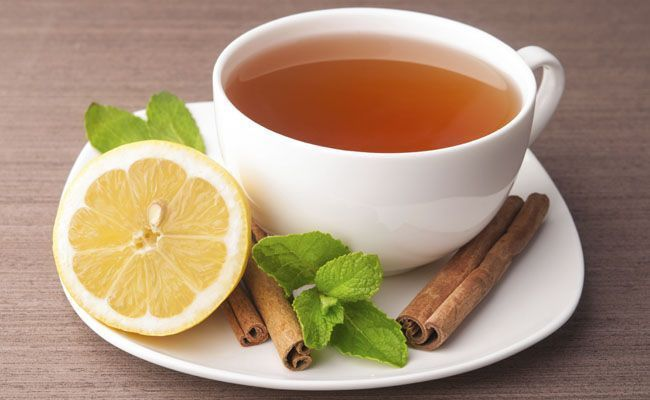
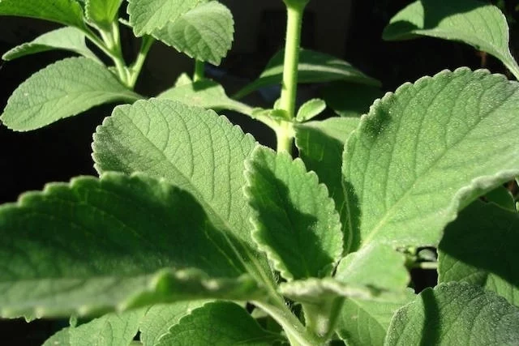
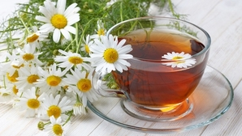
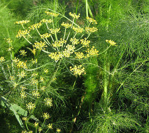
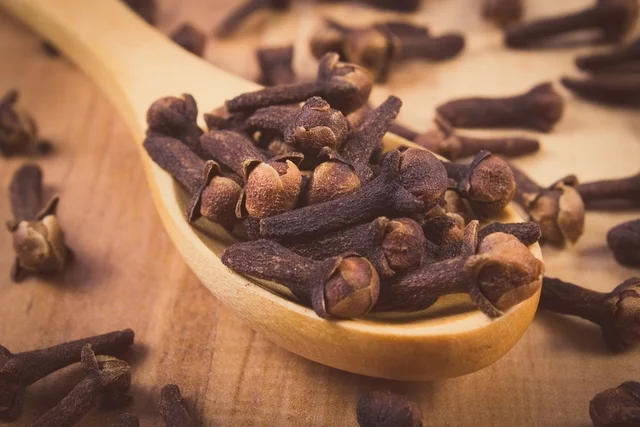
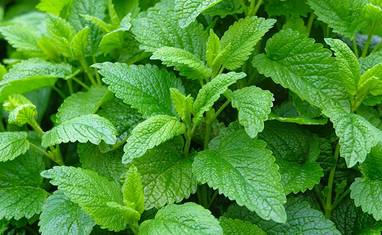
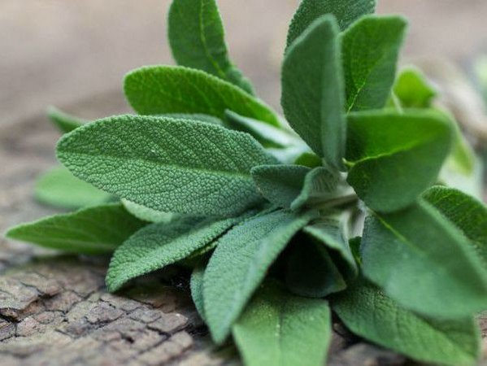
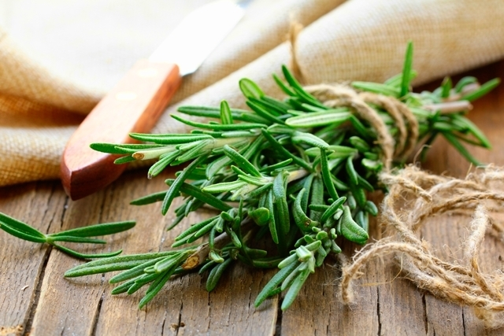
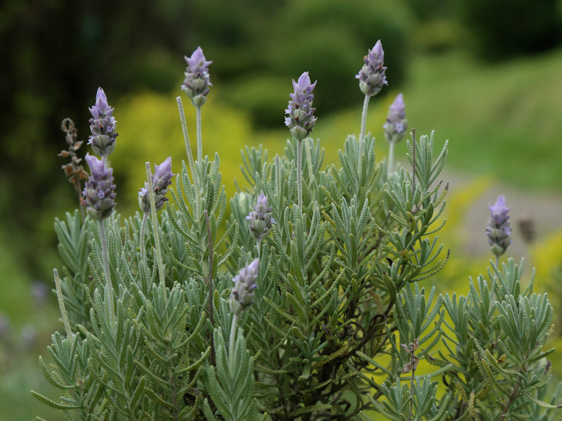

<!DOCTYPE html>
<html lang="en">
<head>
    <meta charset="UTF-8">

</html>
    <meta name="viewport" content="width=device-width, initial-scale=1.0">
    <title> meu site</title>
    <link rel="stylesheet" href="estilo.css"
</head>
  <body>
       <div id="imagem_fundo">
         <h1 class="título"> ODS 3.</h1>
         <P class="subtítulo"> Saúde e Bem-Estar</P>
         <a class="acao" href="https://nacoesunidas.org/pos2015/ods3/" target="_blanck">saiba mais</a>
       </div id="imagem_fundo">
   <section id="projeto">
       <div class="coluna">
            
            <iframe width="100%" height="315" src="https://www.youtube.com/embed/DznXnqnWWsE" frameborder="0" allow="accelerometer; autoplay; encrypted-media; gyroscope; picture-in-picture" allowfullscreen></iframe>
            
        </div>
       <div class="coluna">
             <h2>ODS 3: OBJETIVOS E METAS PARA 2030</h2>
             <p class="justificado">&nbsp &nbsp &nbsp Reduzir a taxa de mortalidade infantil e materna e acabar com as epidemias é uma das metas do ODS 3, onde juntamente com outros 16 objetivos, compõem agenda 2030, aprovada em 2015 em um evento que reuniu cerca de 150 representantes de Estado e de Governo, onde foram criados os 17 Objetivos do desenvolvimento Sustentável, desde então a Organização Mundial da Saúde e outros organismos das Nações Unidas estão atuando na implementação deste plano. </p>
             <p class="justificado">&nbsp &nbsp &nbsp Nas últimas décadas ouve uma redução significativa no índice de mortalidade infantil e materna, mas ainda assim cerca de  15.000 crianças menores de 5 anos  morrem diariamente, e 300.000 mulheres morrem durante o parto, com esses dados fica claro que há a necessidade de melhoria nos Sistemas de Saúde primária, e de iniciativas e projetos embasados na saúde e bem-estar.</p>
             <p class="justificado">&nbsp &nbsp &nbsp Segundo a Organização Mundial de Saúde (OMS), saúde pode ser definida como “um estado de completo bem-estar físico, mental e social, e não apenas a ausência de doença ou enfermidades”, ou seja, ter saúde não é apenas estar sem doença, é estar de bem consigo mesma. Ter saúde sempre não é fácil, mas também não é impossível, existem várias formas de se cuidar e de evitar doenças. </p>
        </div>
     
   </section>        
   <section id="sessão1">
             
        </div>
             <h3> A IMPORTÂNCIA DOS CHÁS  </h3>
             <p class="justificado"> &nbsp &nbsp &nbsp Os chás são comprovadamente um remédio natural, pesquisadores do Hospital Universitário de Zhujiang, descobriram que beber chá pode ter implicações positivas para a saúde do corpo. Um estudo avaliou que as pessoas que consomem chá têm menores chances de desenvolver câncer de fígado, esteatose hepática, cirrose e doença hepática crônica, eles também diminuem os níveis de colesterol no sangue. <br>
                                     &nbsp &nbsp &nbsp Além disso, existem chás que atuam como calmantes, diminuindo a ansiedade, prevenindo a depressão e também ajudando na qualidade do sono. Chás podem ajudar na concentração e na capacidade de aprendizagem, tem chá pra tudo, para alívio de cólicas menstruais, contra dor de dente e até mesmo chá com efeito emagrecedor.  </p>
    </section>
    <section id="sessãodois">
            </div>
             <h4>PROPRIEDADES DAS ERVAS MEDICINAIS</h4>
         <div class="colunaquatro"> 
              
             <p>•Boldo:	Diminui os efeitos das bebidas alcoólicas, diminui os gases, ajuda na digestão e no funcionamento do aparelho digestivo, melhora o funcionamento do fígado e alivia os sintomas de intolerância alimentar. O chá deve ser ingerido logo após seu preparo.</p>  
         </div>
         <div class="colunaquatro">   
              
             <p>•	Camomila: acalmar e reduzir a ansiedade, alivia cólicas menstruais, melhora a sensação de má digestão, remove as impurezas da pele. O chá pode ser preparado usando as flores secas da planta. A camomila é usada para fazer chás para bebês pois acalma e diminui as cólicas.</p>
         </div>
         <div class="colunaquatro">    
             
             <p>•	Erva-doce: indicado para cólicas menstruais, inflamações na boca e garganta, tosse, gripe, resfriado, dores de cabeça e de barriga, este chá também é bastante conhecido por estimular a produção de leite materno, também é indicada para reduzir os níveis de açúcar no sangue. </p>
         </div>
         <div class="colunaquatro">    
            
             <p> •	Cravo-da-índia: fonte de  vitamina A e vitamina E, previne câncer, combate o mau-hálito, estimula o desejo sexual, melhora a cicatrização, relaxa os músculos e combate o cansaço e facilita a digestão. Para fazer o chá basta usar 10g de cravo para 1 litro de água e ferver por 15 minutos.</p>
        </div>
         <div class="colunaquatro">   
             
             <p>•	Erva-cidreira: melhora a qualidade do sono, alivia dores de cabeça, é um excelente calmante, promove o alívio de cólicas menstruais e previne distúrbios renais, combater a retenção de líquidos, esse chá não há contraindicações.</p>
         </div>
         <div class="colunaquatro">   
             
             <p>•	Salvia: é estimulador de apetite, possui propriedades antimicrobianas, cicatrizantes, e anti-inflamatórias, melhora o sistema gastrointestinal. É contraindicada na amamentação pois reduz a produção de leite materno.</p>
         </div>
         <div class="colunaquatro">   
             
             <p>•	Alecrim:  possui ação antibiótica contra infecção urinária, combate o cansaço metal, auxilia no controle de diabetes, é anti-inflamatório, fortalece o sistema imunológico.</p>
         </div>
         <div class="colunaquatro">
            
            <p>•	Alfazema: reduz a enxaqueca, reduz a pressão arterial, reduz o estresse, estabiliza o batimento cardíaco, e combate febre, o banho quente com alfazema é um ótimo relaxante.</p>
         </div>

    </section>  
    <section id="complemento">
             <h5> Veja também:</h5>
             <h6> Brasil: um país rico em ervas medicinais.</h6>
                <iframe width="560" height="315" src="https://www.youtube.com/embed/zzwa8v2XtTA" frameborder="0" allow="accelerometer; autoplay; encrypted-media; gyroscope; picture-in-picture" allowfullscreen></iframe>
             <h6> Babosa: benefícios para pele, cabelo e mais. </h6>
             <iframe width="560" height="315" src="https://www.youtube.com/embed/mV6P5Pv8amI" frameborder="0" allow="accelerometer; autoplay; encrypted-media; gyroscope; picture-in-picture" allowfullscreen></iframe>
              <h6>Os chás emagrecedores recomendados por médicos.</h6>
              <iframe width="560" height="315" src="https://www.youtube.com/embed/SrOSegD_M3A" frameborder="0" allow="accelerometer; autoplay; encrypted-media; gyroscope; picture-in-picture" allowfullscreen></iframe>
   </section>
   <section id="sobre">
        <p> SOBRE A AUTORA   
    <h3> Vanessa Estriser  </h3> </p>
       <p class="justificado">  &nbsp &nbsp &nbsp Sou Vanessa Estriser, tenho 18 anos, resido no interior de uma cidadezinha do Planalto Norte Catarinense, estou participando do programa “Meu Primeiro Site” da empresa JA Rio de Janeiro, sendo este o meu projeto inicial, sou grata pela oportunidade, pois foi meu primeiro contado com desenvolvimento de sistemas, espero que gostem do meu trabalho.
        </p>
   </section>
</body>

